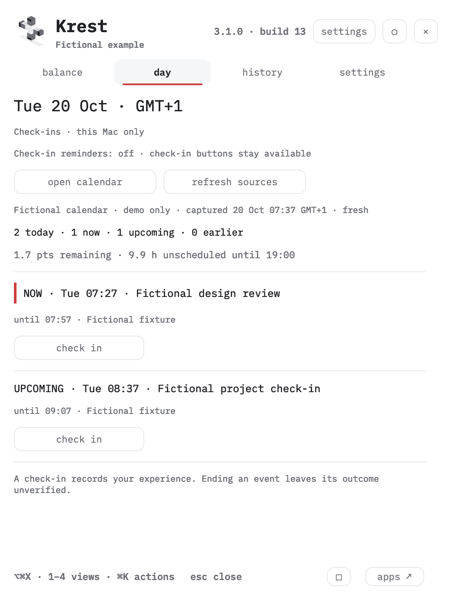
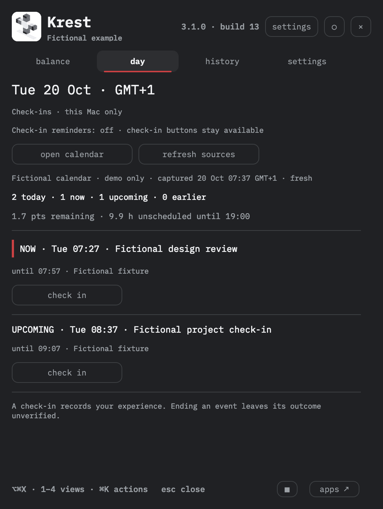

Public demo
Invented records. No access to your calendar, tasks or private board. Check-ins stay in this browser.
explore the example → AIM mindset apps
AIM mindset apps
MAC APP + YOUR OWN WORKSPACE · EXPERIMENTAL BETA
Start with your day: calls, the available confirmed plan and the context around them. Explore the original cross, inspect source changes and record how an event felt.
Local calendar · optional private board · open source


Upcoming, current and earlier events. Read the source and its freshness.
Feeling and energy on a simple −2…+2 scale. Skip whenever you like.
Keep the facts. Write another perspective or one practical next step.
Inspect your recorded observations. Missing entries remain unknown.
A WORKING EXAMPLE
Switch between Overview, Cross, Timeline, Changes, Sources and Method. Hover a block to see its type, source and weight; inspect the dot, open a direction, or hide and restore a record. Sources includes a promise registry with quality flags, explicit links and model contributions. This public example uses invented records and browser-local storage.
DEMO, MAC, PRIVATE BOARD
Invented records. No access to your calendar, tasks or private board. Check-ins stay in this browser.
explore the example →Your configured sources, research field and shared check-in journal. The Mac app shows the same event ratings after sync.
connect your own workspace →A compact view of the same day. Local records remain available offline; a visible receipt shows pending and synced check-ins.
get the companion ↓The public website cannot discover or open your private board. Choose its address deliberately in Mac Settings. Use the Mac menu to open your own Overview, original Cross, Timeline or Changes.
THE FOUR DIRECTIONS
What is truly mine? What can I complete or renegotiate?
Which person, hour, tool or boundary can support one next step?
What happened? Which evidence or previous skill helps now?
What else could happen? What can I actually influence?
The dot follows declared source weights. A check-in changes your feeling/energy record and its summary in the private board and connected Mac. A reframe preview temporarily changes selected weights on screen. Original source records remain intact.
Krest's four-arm model, weights and preview multiplier are experimental product choices. They are not a validated psychological or medical scale.
CHOOSE YOUR START
USE THE APP
Native menu-bar panel, local calendar context, private check-ins and aggregate history.
download Apple silicon ↓Apple silicon · macOS 13+ · build 13 · release & SHA-256 ↗
This developer preview is ad-hoc signed and is not notarized by Apple. Gatekeeper may block a downloaded copy. The release includes source, exact version and SHA-256. Build locally from reviewed source if preferred. A Developer ID release is still being prepared; no security bypass is recommended here.
Move a build you trust to Applications. Calendar and notification access are separate choices. Updates are manual. Remove the app to uninstall; local records remain until you choose to remove them.
MAKE IT YOURS
Build the Mac app, run your own workspace and adapt the rules. Your data and configuration stay yours.
open GitHub ↗setup & customization →MIT code · OFL fonts · no account for local use
git clone https://github.com/ai-mindset-org/toxic-cross.git
cd toxic-cross
python3 собрать.py
KREST_PORT=8777 python3 server.pyWhat changes when I view a day through four directions?
One explicit observation, a possible next step and a date to revisit it.
An AIM product model: obligations, resources, past and future.
v3.1 joins the day, original cross and a read-only promise registry. Explicit reviewed task/focus/promise identities count one representative weight; extracted candidates stay separate. Public examples remain fictional.
Four directions keep competing demands visible together. History compares compatible observations.
An agent can help interpret an observation. Source coverage and your judgement still matter.
One explicit observation, a possible next step and a date to revisit it.
Weights, the four-arm model and the 25% preview are experimental choices with no psychometric validation. Unrated events stay unknown; scheduled end does not prove completion.
VISIBLE BOUNDARIES
Calendar stays read-only. Krest reads Calendar Control's selected local sources or macOS Calendar with permission. It never changes an event.
Check-ins follow your connection. Without a board they stay on your Mac. Connecting a private board enables a shared ratings journal; you can turn ratings sync off separately. Notes are included in that journal. Aggregate observation history excludes event and task titles.
A private board is optional. Connecting it makes requests to your chosen address. A separate sharing switch sends selected event titles and times to that board.
Prompts are deliberate. Quiet check-in notifications are off by default, at most one per day, 08:00–21:00. No retrospective flood after sleep, no event titles on the lock screen.